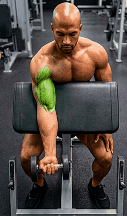
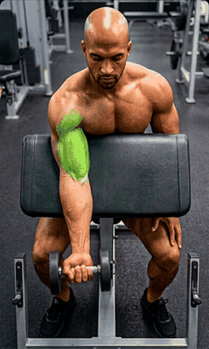
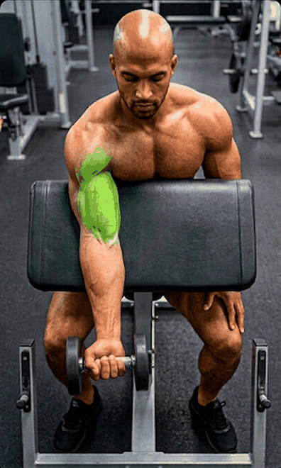
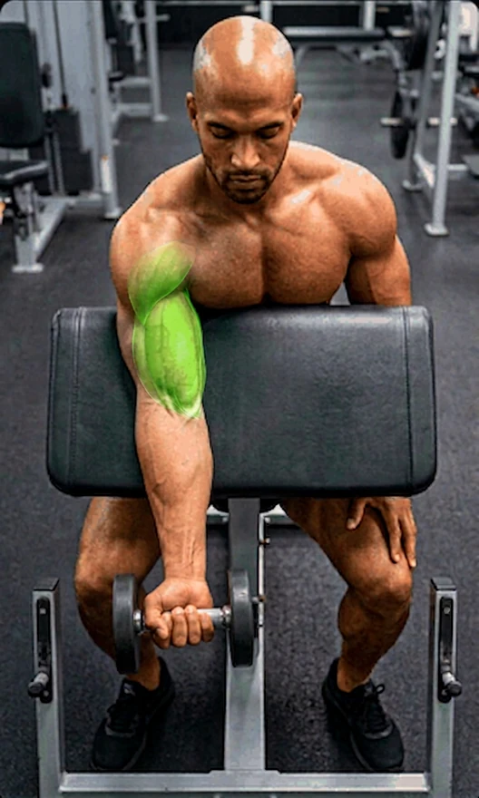

Aucun fichier de l'application n'est modifié. Cette page sert seulement à juger sur le téléphone ce que donnent les différentes définitions et les différents formats.
Exactement la taille que .movement-visual donne à l'image dans JARVIS.



Faire glisser horizontalement. C'est ici que la différence de définition se voit.
GIF limité à 256 couleurs par image · WebP animé · APNG sans perte.

Le test dessine chaque image sur un canvas à deux instants : si les pixels changent, l'animation joue réellement dans ce navigateur / cette WebView.
test en cours…
| Réglage | Poids | Erreur hors vert | Erreur dans le vert |
|---|---|---|---|
| Livré 259×440 | 198 ko | 10,7 | 24,0 |
| GIF 440 | 202 ko | 1,9 | 9,7 |
| GIF 660 | 412 ko | 1,9 | 10,2 |
| GIF 880 | 682 ko | 1,9 | 10,0 |
| WebP animé 660 q90 | 99 ko | 1,9 | 2,6 |
| WebP animé 880 q90 | 140 ko | 1,7 | 2,2 |
| APNG 880 (sans perte) | 1 300 ko | 0 | 0 |
1. Définition retenue : 440, 660 (recommandé) ou 880 ?
2. Format : GIF conservé ou WebP animé (si le test ci-dessus montre que l'animation joue) ?
3. Vert : inchangé, ou rapproché du n°260 avant export ?